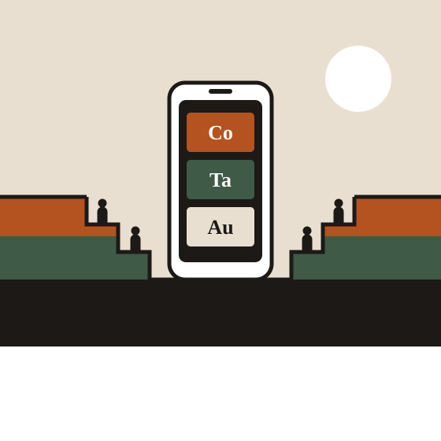

Impacto socioeconômico da obtenção de matéria-prima em países subdesenvolvidos
O preço oculto da tecnologia
Quando compramos um celular, o rastro de pessoas que cavaram, adoeceram e morreram para que ele existisse vem junto.
Celulares, notebooks e carros elétricos dependem de minerais como cobalto, tântalo e ouro. Boa parte deles sai de regiões onde a mineração anda junto com trabalho infantil, dívida, violência de grupos armados e pouca fiscalização. Esta pesquisa acompanha esses minerais da mina até o aparelho.

Um trabalho integrado
Este portal junta duas disciplinas em um só projeto. Em Geografia, o grupo pesquisou de onde vêm os minerais da tecnologia e quem paga o custo da extração. Em Informática, transformou essa pesquisa em um site feito à mão, com HTML, CSS e JavaScript.
Cada professor orientou uma parte do trabalho:
-
Augusto Monteiro
Professor de Geografia
Orienta a pesquisa: o tema, as fontes e a análise dos impactos.
-
Nelson Nascimento
Professor de Informática
Orienta a construção do site: estrutura, estilo e programação.
A equipe
Sete estudantes da turma 117, Campus Cubatão, autores da pesquisa e do site.
- Alice
- Ana Clara
- Arthur Neves
- André
- Gabrielle
- Geovanna
- Maria Fernanda